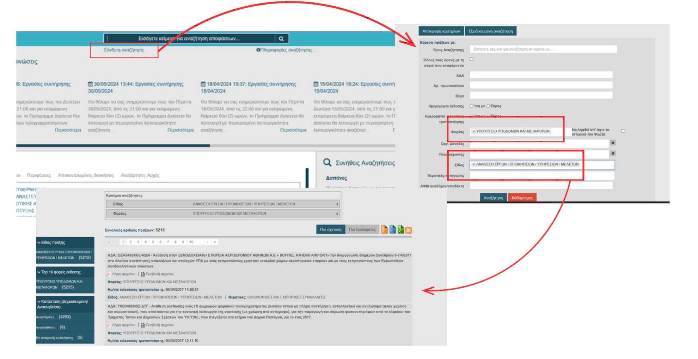
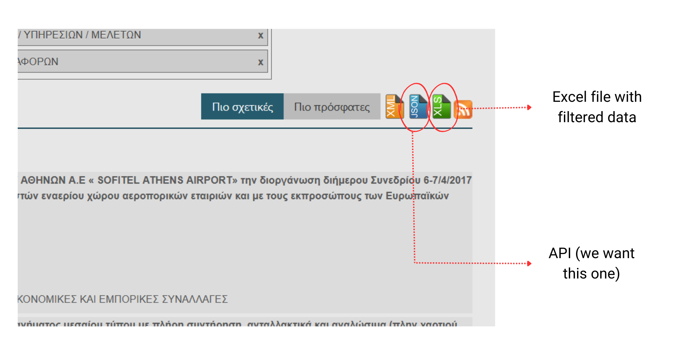
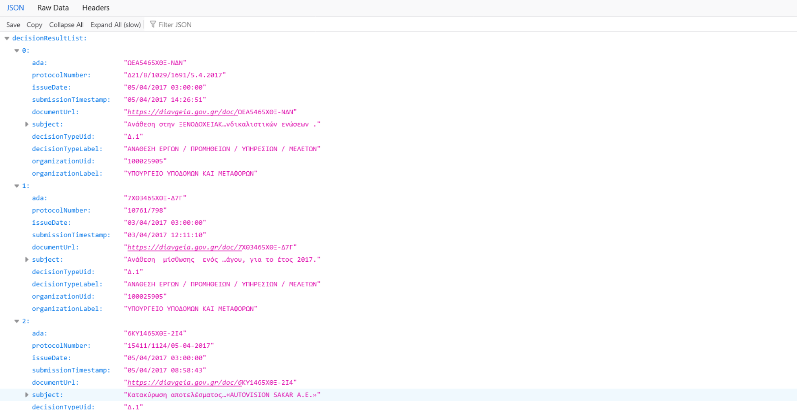
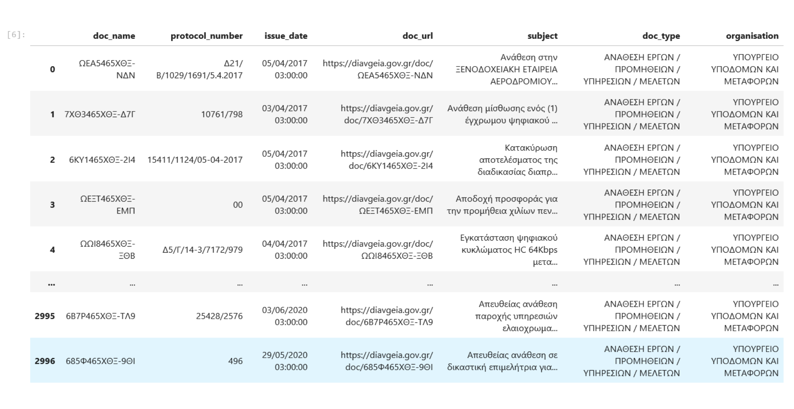
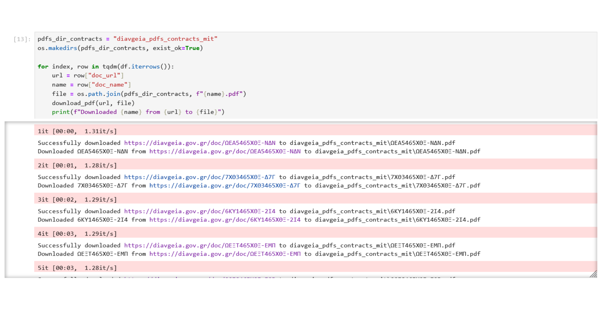
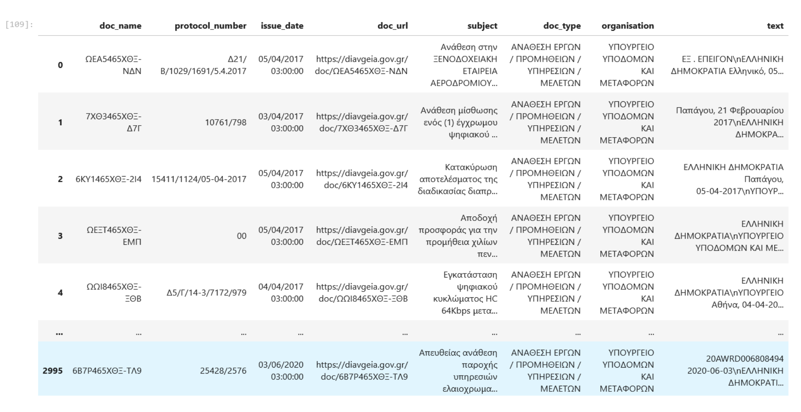
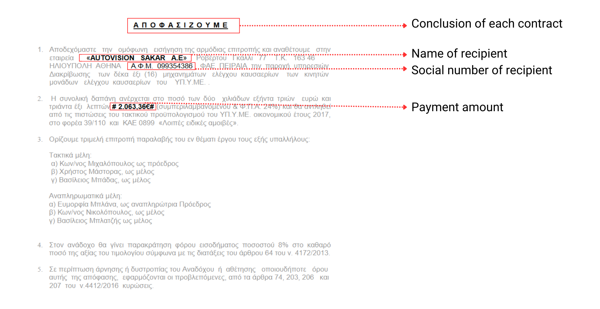

"The object of this law is to introduce the obligation to post online the laws, presidential decrees, and acts issued by the persons and bodies”, from the wider public sector all the way to the Prime Minister, and “to create the conditions for ensuring wide accessibility to them."
- Article 1 of 3861/2010, published on July 13, 2010
On October 1, 2010, almost three months after the law was published,
all Greek government institutions were obliged to start uploading their acts and decisions on the Internet
keeping in mind issues of national security and sensitive personal data.
This was the beginning of the Transparency Program initiative called “Diavgeia”,
one of the best reforms of the last decade that has revolutionized access to public contracts,
assignments and other data mostly related to the allocation of public money.
Every day, hundreds of documents in the form of PDF are being uploaded to Diavgeia’s Portal.
This vast majority of information is both its greatest advantage and its main problem.
This project attempts to help journalists, researchers and the public to better investigate the documents
published in Diavgeia with the help of the programming language, Python.
See the entire code with further explanations in this Jupyter Notebook.
Step One: Filter Diavgeia’s Portal and get the API
The public organization of focus here is the Ministry of Infrastructure and Transportation and its public contracts.
To scrape the documents and additional data from Diavgeia, input the organization's name and the type of document
in the respective fields in the “Advanced Search” feature.

There is no limit to the filters, in fact the more focused the search the better the results.
It’s worth noting that using a specific type of document increases the likelihood of a consistent layout
across the documents, which simplifies the process of data extraction later on.
After filtering the portal by document type and organization, there is an option to either download an excel file
to save the results or use Diavgeia’s API, which stands for Application Programming Interface, instead.

An API is a way for computers to talk to each other, and while an Excel file can be useful,
an API can provide real-time access to the most current data, eliminating the need to
repeatedly filter a portal and download updated spreadsheets. It also gives the ability to search directly
to Diavgeia's portal without visiting the site by constructing the url properly.

Note: The results shown on Diavgeia’s page are 5,215,
however both the API and the Excel file provide only 3,000 results.
This can be due to the large size of the data. To avoid losing any files, make your search even more specific,
filtering by year or keywords.
Clicking on the JSON icon will open a file in a url. To scrape the data copy and paste the url to any work environment,
in this case a Jupyter Notebook.
Step Two: Download and store the results using Python

The Python libraries and modules to get the available data from the API, i.e. the name and url of each public contract
in the form of .pdf, its protocol number, the date it was uploaded to Diavgeia, and a brief description of its content,
and store them in a table are Requests, Pandas and JSON.
Step Three: Download and store the PDFs
The pdf files can be found in the column “doc_url”, and are automatically downloaded in the computer when their url is opened.
In this case, the “os” Python module (operating system) was used to create a directory in the computer where the files
are going to be stored. When requesting multiple .pdf files, it’s important to give the site a “timeout” to prevent network
issues and server problems.
The results will look something like this:

Even with a “timeout” between requests, due to the large number of documents, network issues may occur,
leading to some documents being missed. In this instance, 70 documents are missing. Given the many requests made,
it was decided to proceed with the available data rather than attempt further retrievals.
Step Four: Convert the text
To get data from the .pdfs first the files must be converted to an editable format.
This was conducted with the help of the “pdfplumber” library, which extracted the text from each pdf.
The text on a few of these files was not readable either due to the mix of Greek and English characters on them
or because the pdfs might be corrupted. It is important for the analysis to have all the pages of one file in a single cell
to avoid duplicates.
The result after merging the text to the existing table looks something like this:

Step Five: Extract the data
See the entire code with further explanations in this Jupyter Notebook.

The snapshot showcases a typical structure of a public contract. This part is at the end of most files,
and it can be used to extract important information such as the social number of the recipient,
the recipient name and the payment amount. This was achieved through the “regular expressions”,
a powerful tool for matching and manipulating text based on specific patterns.
The easiest pattern that can be extracted from the pdfs is the social number of the recipient (ΑΦΜ).
It’s a nine-digit pattern following the text “ΑΦΜ” that should be in all of the documents except in cases
where there is no recipient, or the recipient is a foreign entity or an entity without a social number.
Since they can be more than one recipient in a contract, all social numbers must be identified.
It’s important to keep in mind that a social number can be missing or misspelled due to human error.
Due to the varying structures and inconsistent formats across the PDFs, extracting recipient names can be very challenging.
However, this doesn’t make the extraction process futile. Social security numbers,
which identify the recipients, can still be analyzed to highlight outliers and provide useful insights.
Another insight that can be extracted through regular expression from the column “subject” is the number of direct contracts.
This refers to agreements where government agencies or public institutions buy goods, services, or work directly
from a provider without holding a competitive bidding process. This approach is not illegal,
it’s often used under specific conditions where a competitive tendering process might be deemed unnecessary or impractical,
however it can lead to transparency issues and increase the risk of favoritism or misuse of public funds.